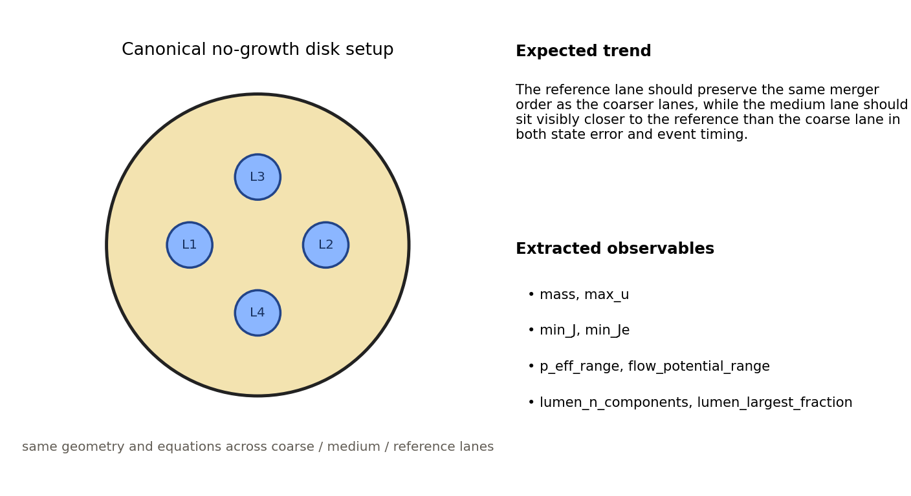
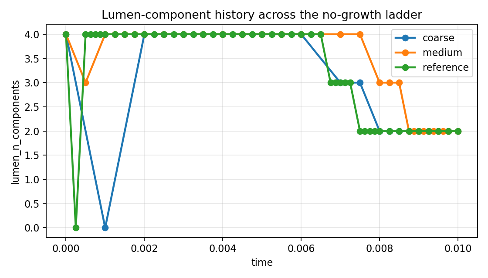
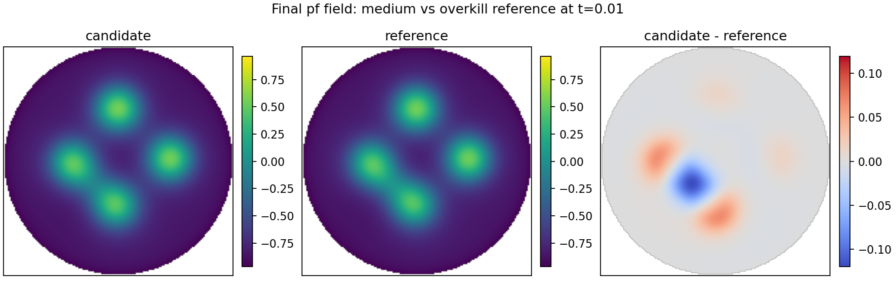
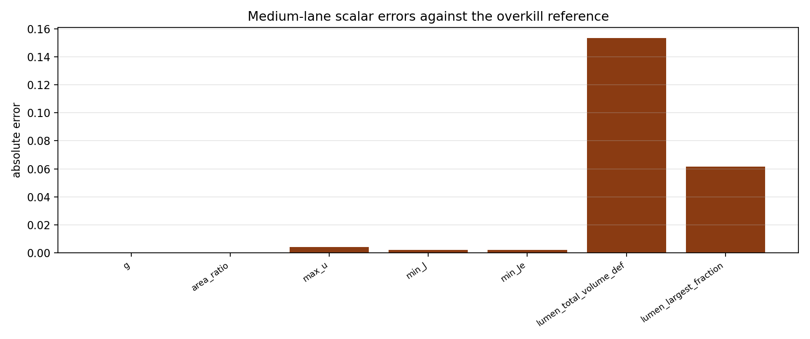
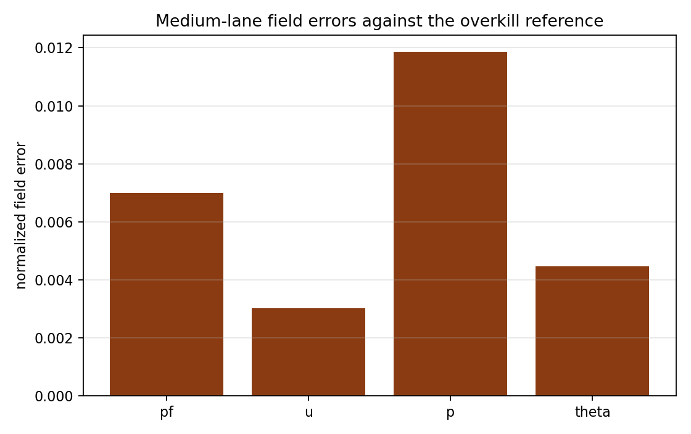
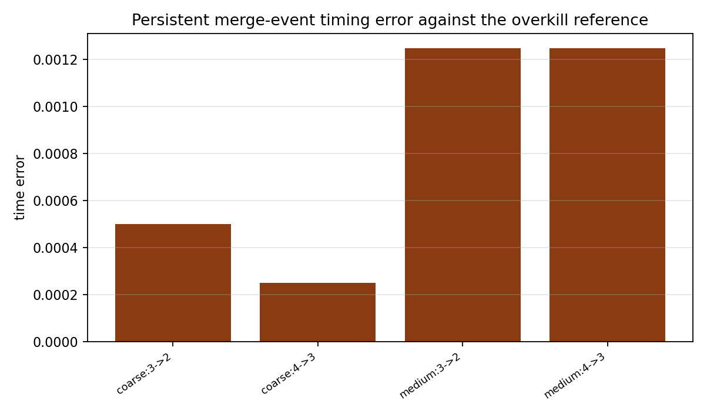

Benchmark
CHB Growth-Only Ladder
Family: reference-ladders
Coarse and medium retained-accuracy ladder against an overkill growth-only reference.
Target and Success Criteria
target_kind: Overkill reference
Tier: full
Unknowns active: pf, u, p, theta
Frozen terms: benchmark geometry with growth-only forcing
Comparison grammar: Achieved / Target
Tickets: VV-012
What This Benchmark Verifies
This ladder checks retained coupled-state accuracy against a same-equations overkill reference on the canonical growth-only disk.
Benchmark Narrative
Narrative
Physical Problem
Canonical four-lumen disk with growth active and the other canonical forcing terms frozen is run at coarse, medium, and overkill-reference fidelities.
Narrative
Target Definition
The target is the growth-only overkill reference lane. The expected trend is that the medium lane should remain closer to the reference than the coarse lane while preserving the same symmetry and merger pattern.
Narrative
Why These Observables
The setup schematic explains the canonical disk problem, the topology/history plots and final pf triptych provide raw evidence from the run, and the scalar and field error bars show which extracted observables are compared against the overkill target.
Narrative
How To Read The Error
Large scalar or field errors indicate retained-state drift under growth-only forcing. Symmetry offsets and topology mismatches help distinguish bulk-state error from geometry rearrangement error.
Narrative
Reference Qualification
All lanes use the same public workflow and differ only in numerical fidelity, so the overkill lane is used as the target for retained-accuracy calculations.
Narrative
Limitations
This is a growth-only canonical-disk ladder. It does not yet include the full promoted postprocess/media lane used by the larger public simulation studies.
coarse_max_merge_time_error
s
pass
medium_max_merge_time_error
s
pass
coarse_final_lumen_count
components
pass
coarse_min_J_min
pass
coarse_min_Je_min
pass
medium_final_lumen_count
components
pass
medium_min_J_min
pass
medium_min_Je_min
pass
reference_final_lumen_count
components
pass
reference_min_J_min
pass
reference_min_Je_min
pass
Setup Schematic
figure

Setup schematic for the canonical no-growth ladder, including the shared four-lumen disk geometry and expected refinement trend.
plots/setup-schematic.png
Raw Run Evidence
Extracted Observables
plot

Raw lumen-component history across the coarse, medium, and reference no-growth lanes.
plots/lumen-topology-history.png
plot

Final pf field comparison showing medium, reference, and their difference at the last common accepted time.
plots/medium-pf-vs-reference-final.png
Error Summary
plot

Medium-lane scalar errors measured against the overkill reference target.
plots/medium-scalar-errors.png
plot

Medium-lane field errors for pf, u, p, theta against the overkill reference.
plots/medium-field-errors.png
plot

Persistent merge-event timing error for coarse and medium against the overkill reference.
plots/persistent-merge-time-errors.png
Scalar Summary
| Label | Value | Unit | Comparison | Threshold | Severity |
|---|---|---|---|---|---|
| coarse_max_merge_time_error | 0.0005 | s | 0 | 0 | warn |
| medium_max_merge_time_error | 0.00125 | s | 0 | 0 | warn |
| coarse_final_lumen_count | 2 | components | 2 | match reference | pass |
| coarse_min_J_min | 0.848312 | > 0.0 | 0 | pass | |
| coarse_min_Je_min | 0.847276 | > 0.0 | 0 | pass | |
| medium_final_lumen_count | 2 | components | 2 | match reference | pass |
| medium_min_J_min | 0.842512 | > 0.0 | 0 | pass | |
| medium_min_Je_min | 0.841776 | > 0.0 | 0 | pass | |
| reference_final_lumen_count | 2 | components | 2 | match reference | pass |
| reference_min_J_min | 0.839289 | > 0.0 | 0 | pass | |
| reference_min_Je_min | 0.838644 | > 0.0 | 0 | pass |
Evidence Table
| Label | Metric | Comparison | Threshold | Severity |
|---|---|---|---|---|
| reference_levels | levels | coarse, medium, reference | coarse, medium, reference | pass |
| medium_event_time_tolerance | dt_medium + dt_reference | 0.00075 | 0.00075 | warn |
| medium_event_time_max | max_medium_persistent_event_time_error | 0.00125 | 0.00075 | warn |
Series Overview
| Plot | Group | Observable | Case | Level | Target |
|---|---|---|---|---|---|
| coarse_g | reference_target | g | coarse | coarse | overkill reference |
| coarse_area_ratio | reference_target | area ratio | coarse | coarse | overkill reference |
| coarse_max_u | reference_target | max u | coarse | coarse | overkill reference |
| coarse_min_J | reference_target | min J | coarse | coarse | overkill reference |
| coarse_min_Je | reference_target | min Je | coarse | coarse | overkill reference |
| coarse_lumen_total_volume_def | reference_target | lumen total volume def | coarse | coarse | overkill reference |
| coarse_lumen_largest_fraction | reference_target | lumen largest fraction | coarse | coarse | overkill reference |
| coarse_pf_field | field_error | pf field error | coarse | coarse | overkill reference |
| coarse_u_field | field_error | u field error | coarse | coarse | overkill reference |
| coarse_p_field | field_error | p field error | coarse | coarse | overkill reference |
| coarse_theta_field | field_error | theta field error | coarse | coarse | overkill reference |
| coarse_merge_4_to_3 | event_time | persistent merge event 4->3 | coarse | coarse | overkill reference |
| coarse_merge_3_to_2 | event_time | persistent merge event 3->2 | coarse | coarse | overkill reference |
| medium_g | reference_target | g | medium | medium | overkill reference |
| medium_area_ratio | reference_target | area ratio | medium | medium | overkill reference |
| medium_max_u | reference_target | max u | medium | medium | overkill reference |
| medium_min_J | reference_target | min J | medium | medium | overkill reference |
| medium_min_Je | reference_target | min Je | medium | medium | overkill reference |
| medium_lumen_total_volume_def | reference_target | lumen total volume def | medium | medium | overkill reference |
| medium_lumen_largest_fraction | reference_target | lumen largest fraction | medium | medium | overkill reference |
| medium_pf_field | field_error | pf field error | medium | medium | overkill reference |
| medium_u_field | field_error | u field error | medium | medium | overkill reference |
| medium_p_field | field_error | p field error | medium | medium | overkill reference |
| medium_theta_field | field_error | theta field error | medium | medium | overkill reference |
| medium_merge_4_to_3 | event_time | persistent merge event 4->3 | medium | medium | overkill reference |
| medium_merge_3_to_2 | event_time | persistent merge event 3->2 | medium | medium | overkill reference |
Cases
Case
coarse
Coarse candidate compared against the reference lane.
Case
medium
Medium candidate compared against the reference lane.
Case
reference
Overkill reference lane used as the target for accuracy calculations.